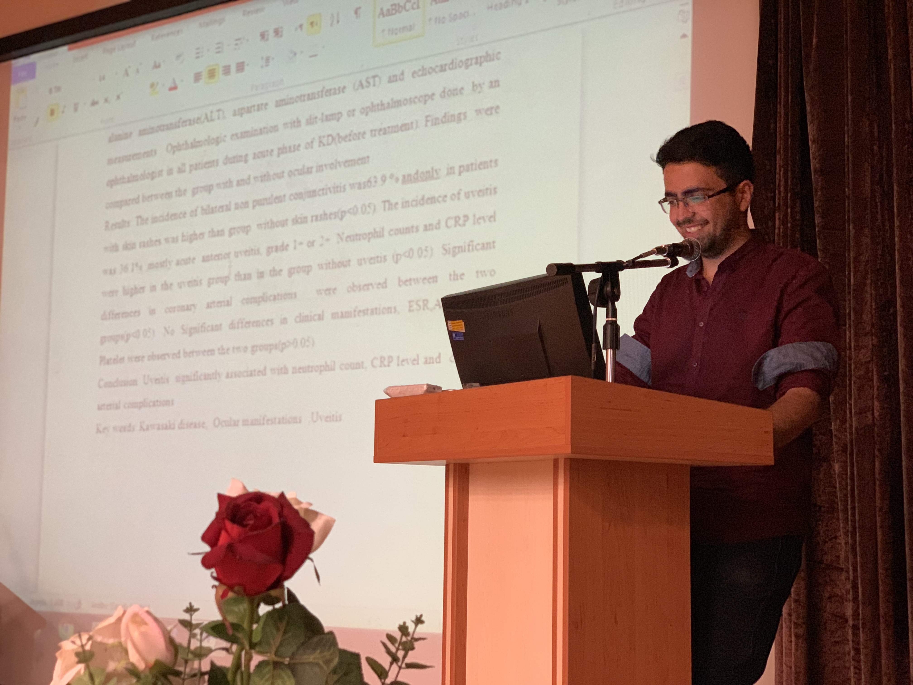
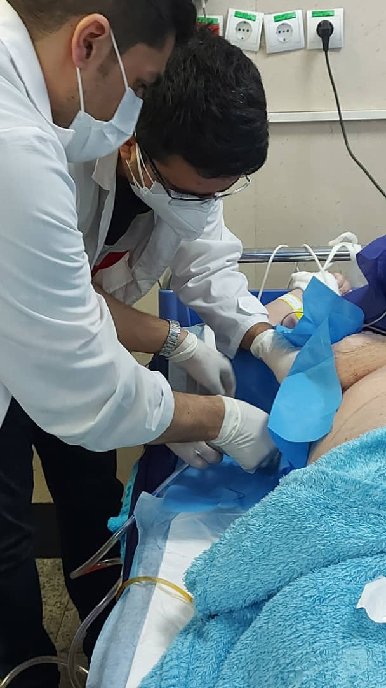
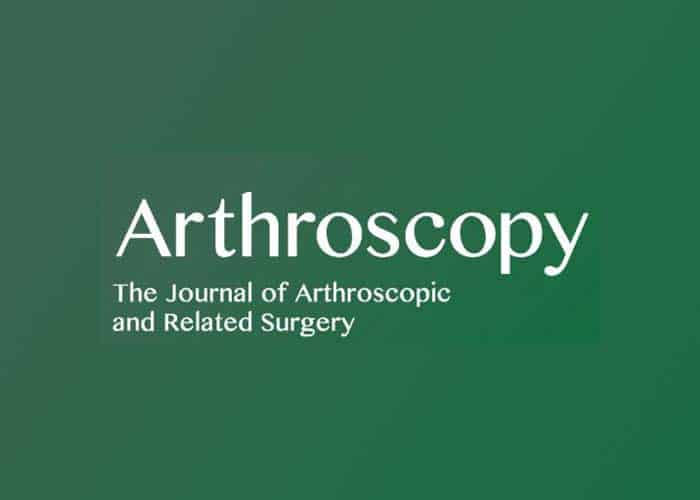
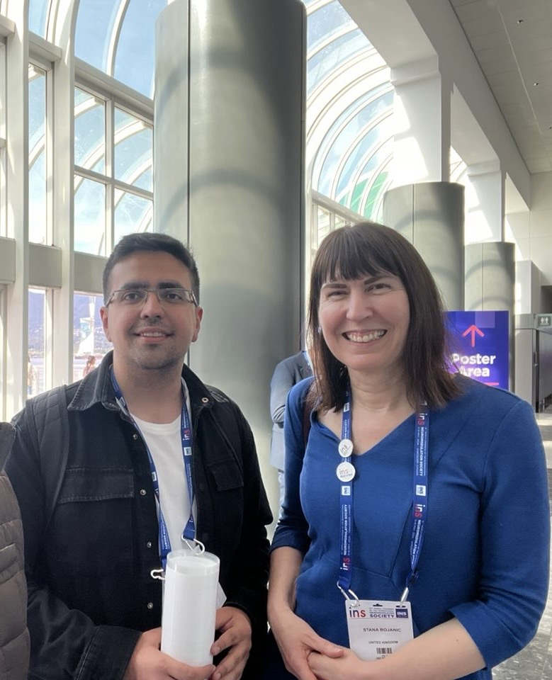
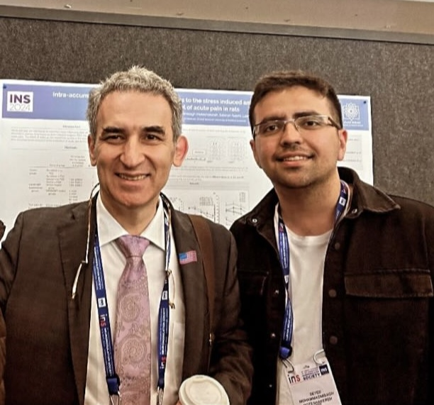
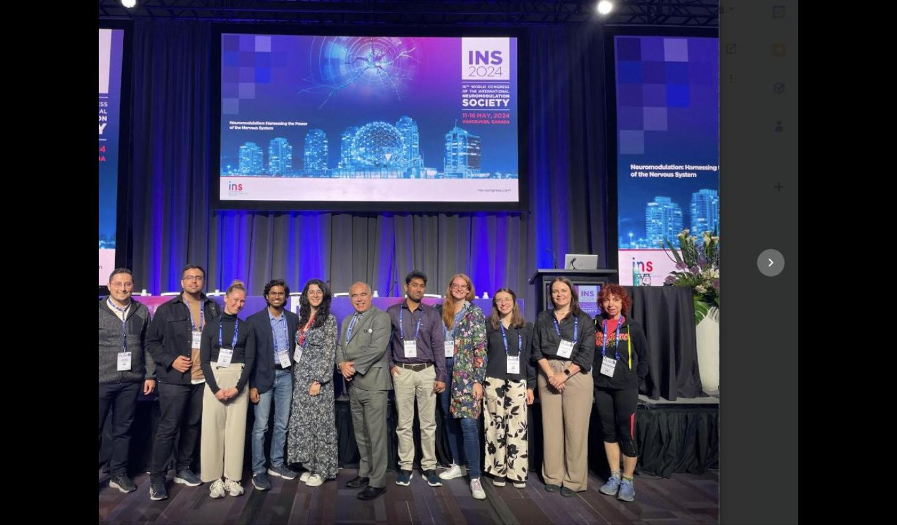
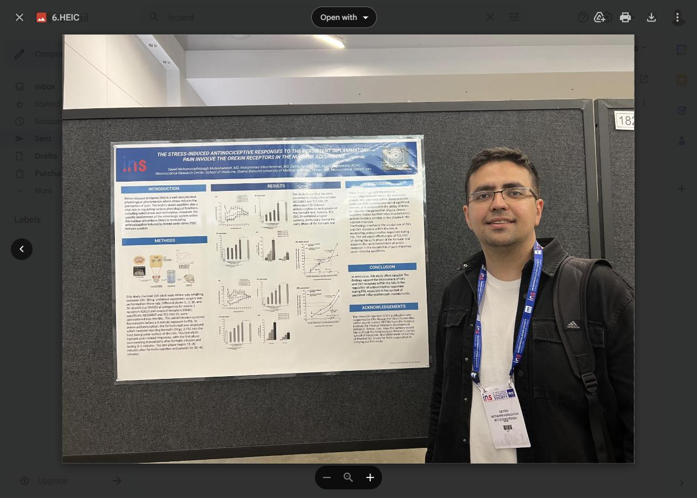
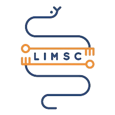
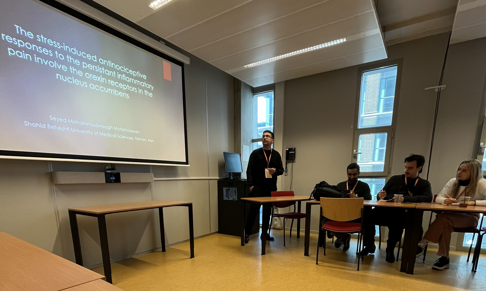
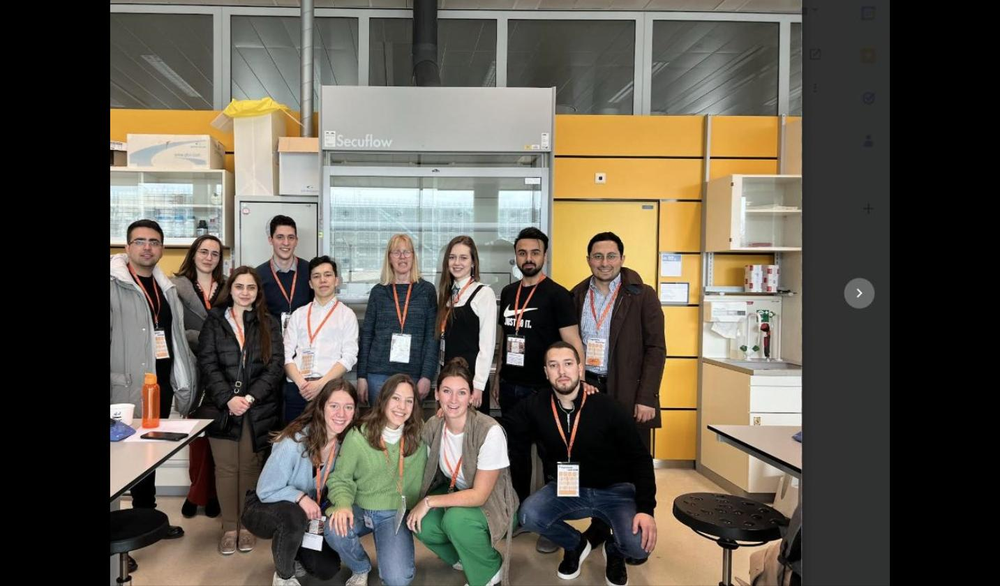

About Me
🔅 Medicine, for me, has never been solely a profession — it is a lens through which I continuously question, learn, and grow, both scientifically and personally.
💡 "The more I research, the more I realize how much remains to be discovered."
📎 I am Misagh, an MD graduate of Shahid Beheshti University of Medical Sciences — Iran's second-ranked university (2022) — who has been immersed in clinical research since 2019.
📝 My research spans neuroscience, orthopedics, trauma, internal medicine, and other surgical specialties, with work published in some of the most influential peer-reviewed journals in their respective fields — including Arthroscopy, JBJS, Foot & Ankle International, and Foot and Ankle Surgery, each recognized as a leading authority in its domain. I also serve as a peer reviewer for Arthroscopy and have presented at internationally recognized congresses, including LIMSC and INS. Additionally, several ongoing projects are currently under review at AJSM and JSES, reflecting a continuously active and expanding research pipeline.
📎 Years of parallel clinical and research experience have sharpened my competencies in scientific writing, and laboratory/animal research — equipping me to contribute meaningfully across both clinical and bench settings.
📍 Currently based in Canada on a work permit, I maintain active remote collaborations and am actively pursuing research opportunities.
✉️ Feel free to reach out for collaboration in international scientific projects.


Background
Education
Research Experience
Clinical Experience
Reviewer Experience

Research
Research Interests
- Sport Medicine
- Knee - Hip - Shoulder
- Foot & Ankle - Hand - Elbow
- Orthopedic Oncology
- Bone Defects & Osteoarthritis
- Pediatric Orthopedics
- Acute Pain - Chronic Pain
- Behavioral Studies
- Spinal Cord Injury
- Cardiology
- Cancer
- Trauma
- General Surgery
- MRI - CT
- X-ray - Sonography
- Musculoskeletal Imaging
Academic Achievements
Published Articles
Submitted Articles
Ongoing Projects
Skills
Academic Collaborations & Reviewer Experience
Conferences & Presentations







Contact
Vancouver, Canada
Shahid Beheshti University of Medical Sciences